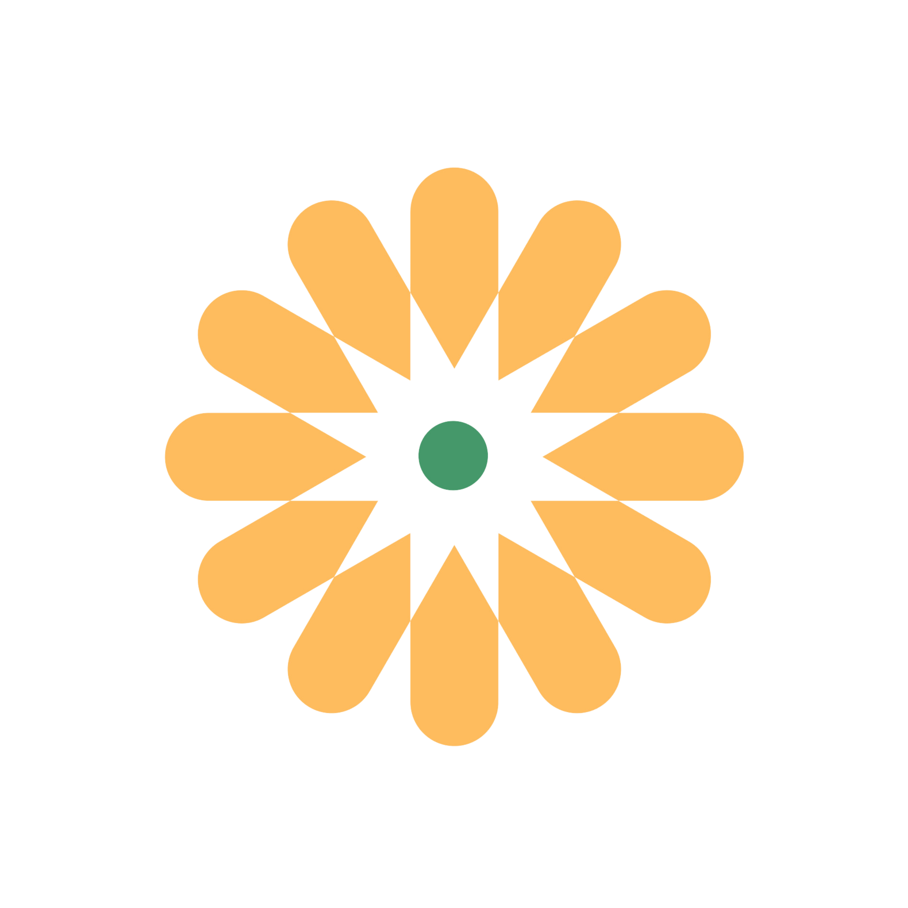
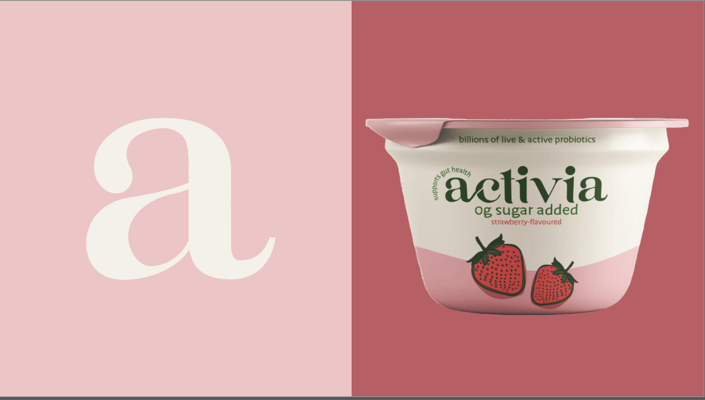
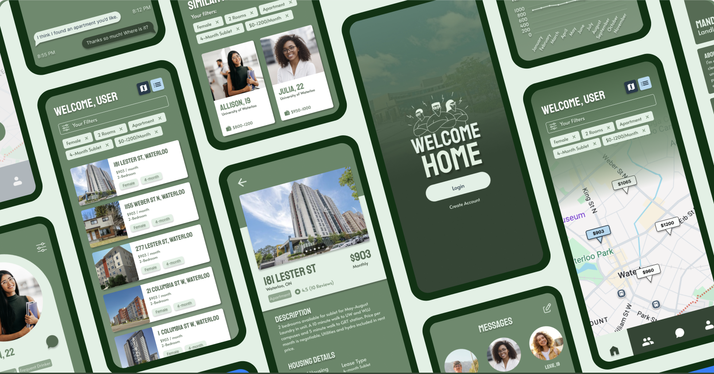
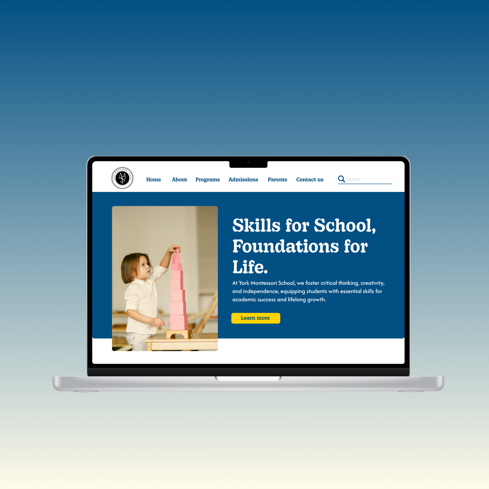
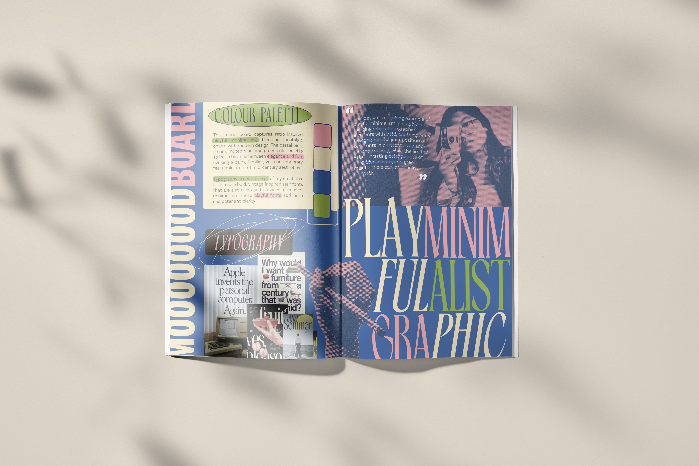

Welcome to Naomi's
PORT
FOLIO
2024
Design Values
Useful.
Thoughtful.
Well made.
These values define how I approach every project. I believe in purposeful, user-focused design that solves real problems and improves experiences. I am intentional with details. My goal is to create designs that are practical, well-crafted, and built to last.
Curated Projects

Activia Rebrand
Brand identity, packaging design

RoomEase
UX/UI design, wireframing, prototyping

York Montessori School
Website redesign, brand identity

What is my design style?
Social media strategy, graphics